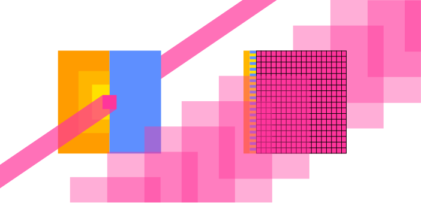

Intel Raptor Lake microarchitecture
Intel Alder lake-S good annotation

H100 die. "squares" are streaming multiprocessors (144). Darker areas between are mostly L3 Cache.
H100 Tensor Core GPU Architecture
Notes on the computer technology stack.
Mechanisms that can control propagation of a signal depending on their state and that can change their state depending on another such signal can be used to build computers.
A NOT-Gate inverts the input signal. An AND-Gate outputs a high signal if both its inputs are high. Any state transition that can be expressed in a series of signals (as a binary number) can be defined using NOT and AND gates. OR gates are implicit when running multiple such functions in parallel.
Everything else is performance optimization. Intelligence can be seen as the ability to compress complex behavior into efficient, useful functions.
Spirits themselves resemble state transition functions. Bacteria, plants, brains, humans, computers, companies, countries, ecosystems.
They can form larger, more complex functions - organisms to help them survive.
Computing substrates are unified under hardware description languages, which define connections between given substrate-dependent logical units to form other desirable functions.
Because hardware is expensive, most computers don't execute fixed functions, but offer a set of generic functions like arithmetic and an instruction input, which defines which functions should be applied to which data and where the result should be stored.
Software is series of instructions. It can be abstracted away from the specific hardware implementation, and so is most flexible, can adapt to other substrates.
Operating systems provide a platform to make it easier for other software to execute. They often manage device drivers, like for storage devices, handle multiple, simultaneous processes, manage memory and offer a way to write and execute programs.
Programming languages help humans ergonomically state their wishes and must eventually be compiled to hardware-specific instructions.
Signal propagation speeds: Flowing water ~ tens of m/s. Soundwaves in solids ~ thousands of m/s. Electromagnetic signals approach the speed of light ~300,000,000 m/s.
They went outside and found that two groups of stuff attract each other but repel members of the same group and still nobody knows why. charges.
If I wiggle a charge, it takes some time for charges nearby to react. As if a signal travelling near 300,000,000 m/s lets them know.
Some materials only display charge behavior after being rubbed together.
When some materials touch some charged materials, the charge appears to spread into the new material as observed by a weaker attraction/repulsion to other charges.
Some materials permit such flow of charge more easily than others, are roughly divided into insulators and conductors.
How are these ideas embedded today?
In some substrates, there are electrons loosely bound to their atom cores. They are not part of a bond and are presumably far away from the core.
If there is an electron surplus on one side and an electron deficit on the other, they will drift in the direction of the deficit.
More loose electrons = better conductor?
Resistors, sometimes made from both conductors and insulators impede flow by forcing barriers into the path. Energy is converted to heat.
In a silicon crystal, electrons are can leave or join an atom core with similar energy. This means the crystal can be bombarded with two types of atoms in different places, one will provide an extra electron when it enters the crystal (n-type) and the other will want an electron from the silicon (p-type). Both doped regions will gain conductance while remaining electrically neutral. Pure silicon crystal can be used as a weak insulator/resistor.
Bombarded silicon crystals are damaged, but will repair when heated. About 1 in 1000 atoms in the lattice is swapped, lest the crystal fragments (?).
If more electrons are added to the side of free floating electrons (n) and a deficit connected to the other side (p). The side which lacks electrons will lack even more and the side that has them will have even more and quickly the pressure becomes large enough for electrons to flow through the gap.
In the other direction, electrons will first fill the electron holes and on the other side they will be sucked out, effectively eliminating charge carries and widening the non-conductive gap (depletion zone). Only if a relatively large voltage is applied, do electrons flow again.
Transistors can be built from an n-p-n arrangement (or p-n-p) with an insulator and a capacitor above the p region. When the capacitor is charged, it sucks electrons into the region, first filling electronholes, then adding free floating electrons allowing free flow to the n-regions: Gate is open. Higher current means the gate capacitor charges faster or higher, opening the channel sooner. Enables faster switching speeds at the cost of power, which rises at current squared.
(FinFETs solve problems from small scale somehow to get smaller)
Sand is filtered by size, weight (and?) to extract most pure silicon, which is molten and a crystal is drawn from it.
Slices of pure silicon crystal (wafers, 15-30cm diameter, 0.2mm thick) are partially masked (with what), bombarded with Bor/Phosphor to create n-p-n regions. Repeated for the other element. Heated to repair the crystal.
Coated with a thin film, which is weakened by UV light shining through a mask. Weakened film washed away. Etched. Conductor (other elements, insulation?) poured into the etched space. Sanded flat. Build up more layers? Cleaned repeatedly.
Practically 3D printing. Many cycles. 3 months for a any chip to complete (with equipment already in place and running!).
Depending on the implementation, various basic building blocks may be available. Mechanical adders or square root calculators, transistors.
HDL expresses connections between these. No speak of electrons, but bits, gates, clocks and busses.
Bits is information spread into multiple signals like (1101 = 13), instead of single 13 signal. For flexibility?
Gates are commonly used arrangements. Truth table of all possible gates with two binary inputs:
| x: y: |
0 0 |
0 1 |
1 0 |
1 1 |
|---|---|---|---|---|
| constant 0 | 0 | 0 | 0 | 0 |
| And | 0 | 0 | 0 | 1 |
| x And Not y | 0 | 0 | 1 | 0 |
| x | 0 | 0 | 1 | 1 |
| Not x And y | 0 | 1 | 0 | 0 |
| y | 0 | 1 | 0 | 1 |
| Xor | 0 | 1 | 1 | 0 |
| Or | 0 | 1 | 1 | 1 |
| Nor | 1 | 0 | 0 | 0 |
| Equivalence | 1 | 0 | 0 | 1 |
| Not y | 1 | 0 | 1 | 0 |
| If y then x | 1 | 0 | 1 | 1 |
| Not x | 1 | 1 | 0 | 0 |
| If x then y | 1 | 1 | 0 | 1 |
| Nand | 1 | 1 | 1 | 0 |
| Constant 1 | 1 | 1 | 1 | 1 |
FPGAs?
Signal propgation takes some time until the output stabilizies (adding 15 and 17 might initally output 22 before carrying over 1 and stabilizing at 32). Clocks exist to store data only when it is expected to have stabilized. They periodically change their output between 0 and 1. Storage will only accept input if the clock is on a 1 cycle. The clock is timed such that any calculation can stabilize during the 0 cycle. They also help synchronized processes. Desktop consumer processors today reach 5 GHz clockrates.

Latency-oriented vs throughput-orientied processors.
Latency is reduced through:
each with diminishing returns.
Throughput-oriented processors use the chip area for more processing cores (magenta) at lower clockrates, saving power. The cores require fast, parallel memory access to stay fed.
(second edition - Noam Nisan, Shimon Schocken)
What I hear, I forget; What I see, I remember; What I do, I understand.
—Confucius (551–479 B.C.)
Possible boolean functions for n binary inputs is ${2}^{2^{n}}$. and some have names, like here with two inputs:
Testing complex chip implementation completely is infeasible, so they test on a subset.
Data parallelism
data parallelism is a simpler special case of task parallelism, where a task is split up into parallelizable sections. data parallelism already provides data that can be treated independently.
code is being reorganized to be executed around the new data structure
2.2 CUDA C program structure
2.3 vector addition kernel CPU
float *P;, accessing address of a variable with int *addr = &V and getting the item at the pointer with float V = *PC2.4 Device global memory and data transfer
void **) and returns possible errors. so there is need for the cudaCheck function.2.5 Kernel functions and threading
2.6 Calling kernel functions
2.7 Compilation
PART 2: deep learning foundations to stable diffusion 2022
have a classification that says how much something corresponds to the target
get gradient for every pixel of the input
Unet: input: some noisy image. output: the noise
Use an autoencoder to reduce image size before training the unet. unet now predicts the noise in the latents (encoded images). use autoencoder's decoder to get high res image again.
AE vs VAE
LABELS
add image label to the input for unet training. Makes it easier for unet to predict noise. Now, I can input label + noise and it starts to find noise that leaves an image equal to my label.
label needs encoding to be non-specific. "beautiful swan", "nice swan", "graceful swan" should return similar images. Training the network on every wording leads to combinatorial explosion.
Instead: train a network to encode images and their labels with a similar vector. Then, since, slight differences in wordings lead to the similar images, the network understands their similarity and can interpolate usefully.
the image vector and its label's vector should be similar. Their vector should be dissimilar to other image or text embedding vectors.
Calculate similarity of two vectors: dot product (= higher if more similar)
loss function (in this case higher = better) = dot product of matching image+label - dot product of non-matching image+label
(= contrastive loss)
models used in this case for image and text encoding : CLIP (contrastive loss IP(?))
network being multimodal: similar embeddings in different modes
model does not know how to improve on a finished image if it turned out wrong. needs to add noise, then redo.
Learning the Art of Electronics
The Art of Electronics
https://www.tinkercad.com/circuits
Paul Drude model of electricty pretends that electrons are discrete mechanical objects. This works, but really they are quantum particles.
GPU PCBs are huge but mostly data storage and delivery, power transformation and delivery and other I/O in support of the core. The Voltage Regulator Modules (VRMs) emit notable heat.
Non Founders Edition cards offer more powerful cooling and sometimes electrical robustness and smallness.
Trying to verify ALU percentage on chip area, but ALUs are too small to differentiate easily?
Intel Raptor Lake microarchitecture
Intel Alder lake-S good annotation
H100 die. "squares" are streaming multiprocessors (144). Darker areas between are mostly L3 Cache.
H100 Tensor Core GPU Architecture
Understanding the anatomy of GPUs using Pokémon
Reddit Books for GPU arch
Backpropagation described here:
Andrej Karpathy: Neural networks: Zero to Hero
Wolfram Alpha to look up functions for derivatives.
Linear layers, convolutional neural networks and optimizers
A Path Towards Autonomous Machine Intelligence (Yann Lecun)
Model Predictive Control MPC
hierarchical planning - no AI system does this so far except implementing by hand
generative adversarial network GAN
LLM Security threats Promt insertion, jailbreak, data poisoning
Robot:
step motor, brushless motor -> more complicated control (servos?), brushed motor
harmonic reducers, planetary gearboxes
building a robot arm
I should be able to fist bump the robot hard, so it flies back but catches itself.
perceptual loss?
It forces a framework onto graphics. Rendering each frame in a scene, it goes through a given graphics pipeline, determining the shape, rasterizing it and calculating color. Programs for each step are called shaders, though they look equivalent to compute kernels operating on different data. Minimum two shaders must be user specified: 1. Vertex shader: operates on vertex data for each frame without altering the original geometry. Can also add or remove vertices. 2. Fragment shader: operates on pixels after all invisible vertices have been culled. Handles texture sampling and color mixing.
vertices = array of numbers -1.0 to 1.0 (outside those bounds is discarded) later to be interpreted as series of x,y,z coordinates of points, usually points of a triangle.
Vertex Buffer Objects (VBOs) help with sending the data to the GPU. Bufferse are generated using a function (which assings an ID too). One Buffer can be bound at any time to any buffer type so all functions manipulating that buffer type will apply to the bound buffer. eg: glBufferData(buffer type, size, vertices, memory optimization) applies to the buffer current bound to [buffer type]
Shaders are compile at runtime.
Shader program will make the still separate vertex- and fragment shaders work, linking their in- and outputs accordingly.
After program creation, the separate shaders are not needed anymore. glUseProgram([shaderProgram]) will make any following shader/render call use it.
how to interpret the vertex input? for which location (specified in vertex shader) is the data? how many values? what type? what stride? start reading the buffer with an offset?
OSDev.org. The OS is first developed for only one target machine. Relevant components:
When the computer starts (power button shorts two mainboard pins), the mainboard firmware, following the widespread UEFI standard initializes connected hardware and, for each storage device, looks for partitions (separately managed storage parts) that are EFI System Partitions (ESP).
UEFI supports some MBR and GPT partition table schemes [1].
It contains bootloaders: .efi files made to hand control from the firmware to the OS kernel (central program in the OS, responsible for ressource allocation and system calls etc.). In some configurable order, UEFI tries launching bootloaders until one works. The bootloader
GRUB is a magic bootloader that does everything for me and follows the Multiboot Standard when finding and handing control to the kernel. This means the kernel 1. needs a multiboot header and 2. is left to set up the stack itself. This first kernel part is written in assembly, because compiled C already requires a stack to run.
The kernel in Bare Bones, written in C, only uses the VGA text mode buffer presumtively set up by GRUB to display text on the screen.
It does this without the C standard library, which is unavailable because it would require 1. system calls and dynamic linker support already implemented in the kernel, and 2. the linker and library available at runtime. This is called being in a Freestanding Environment as opposed to a Hosted Environment. Some header files, though, are part of the compiler, not the C standard library, so some data types, constants and macros are still available.
To compile the kernel, a GCC cross compiler is used.
Intel integrated graphics driver: Intel Docs
https://explained-from-first-principles.com/internet/#out-of-order-delivery
messages understood through the protocol
handle unexpected response, ask for retransmission, time out if silent, maintain order of messages, account for latency.
5 layers
link:
addressing using MAC address within a network through ethernet, wifi, bluetooth protocols.
network layer
uses ip address to connect between different networks through the Internet Protocol (IP). routers send error messages and other information about itself using ICMP (internet control message p)
transport layer
os sending/receiving stuff to/from to processes running in the OS. uses port numbers to differentiate.
can use transmission control p (TCP). pretends there is a direct connection (not packets). enumerates, buffers and confirms received messages to put into right order, retransmit or request retransmission if no confirmation was received. uses checksum for ensuring reliability. sender slows down if it gets no feedback. tcp handshake before actual payload transfer sets a random starting point for the enumeration, making it hard for randos to impersonate.
user datagram p (UDP) fast, unreliable connectionless transport. only source, destination ports, length and checksum in header
Security layer
From top down: